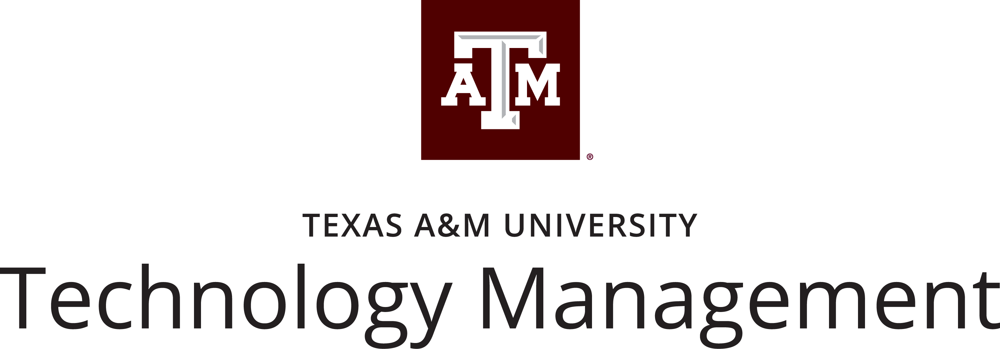

Welcome to Group 0's Project 1 Website!

TCMG 412 Contemporary Issues in Technology Management
"Specific innovation or practices nascent to the professional information technology industry;
of practical applications and analytics of new innovation."